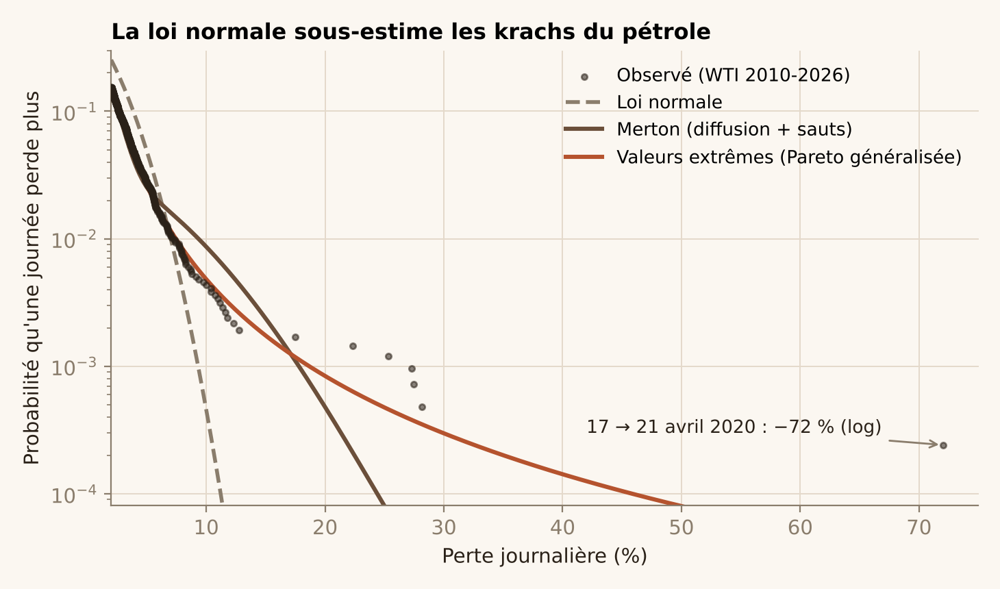
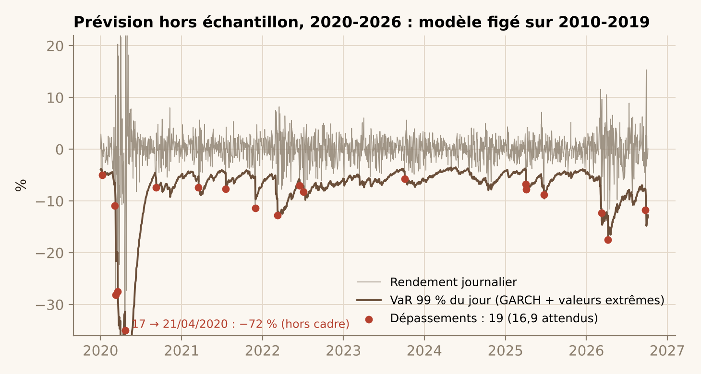
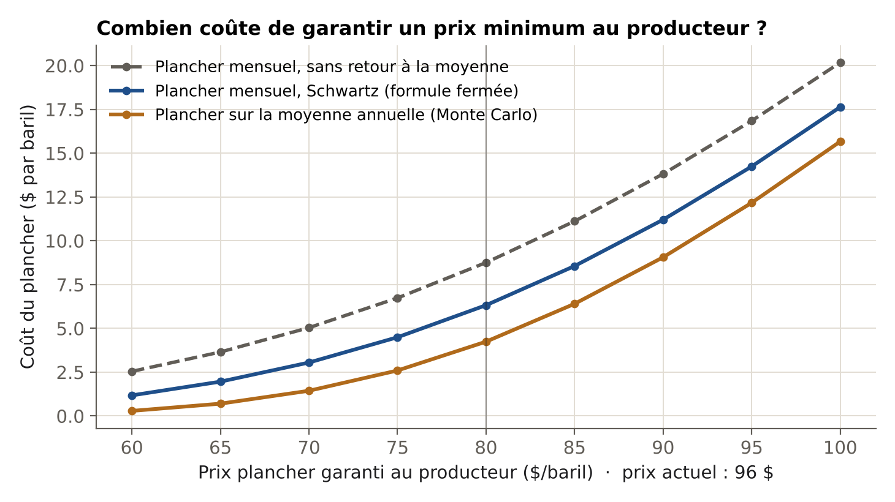
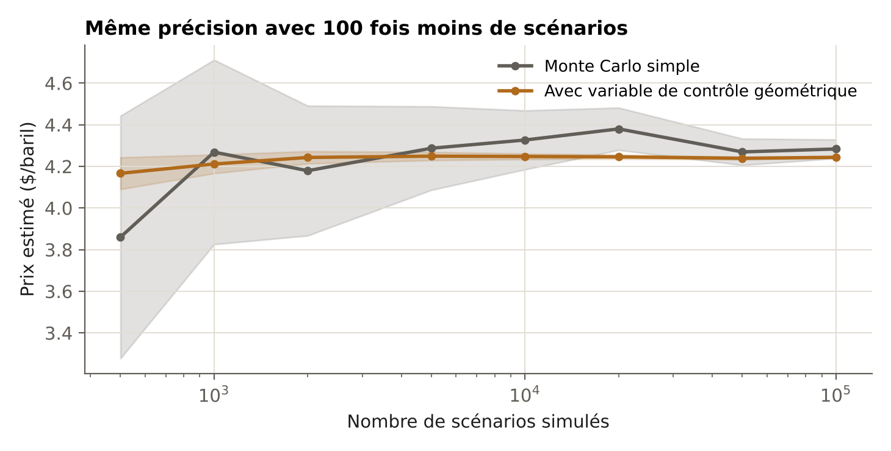
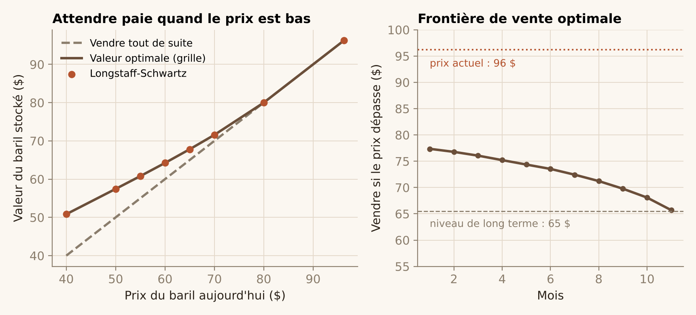
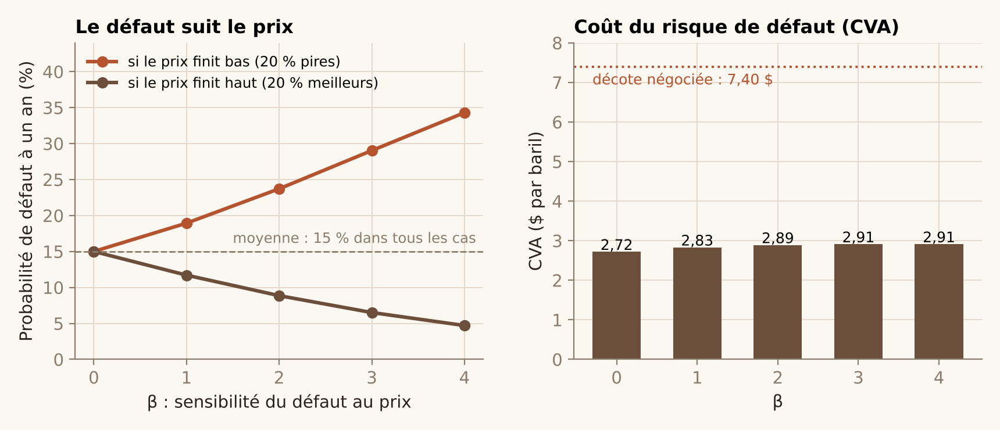

Ce que vaut vraiment un baril préfinancé
Une fois le producteur choisi, quatre questions décident du trade : quelle limite de risque fixer, combien coûte la garantie de prix qu'il demande, faut-il stocker ou vendre, et combien coûte son risque de faillite. Chaque section donne d'abord la décision, puis le calcul sur les prix réels du WTI.
Hypothèses communes : dernier prix WTI 96,24 $ (6 octobre 2026), modèle de Schwartz calibré dans l'étape 1 (κ = 0,90, niveau de long terme 65,47 $, volatilité 52 %), taux sans risque 4 %, décote négociée 7,40 $ par baril.
1. Fixer la limite de risque : les krachs du pétrole
J'utilise les 4 148 rendements journaliers du WTI de 2010 à octobre 2026 (EIA). Les rendements sont logarithmiques ; le jour à prix négatif est retiré, car son logarithme n'existe pas (le rendement du 17 au 21 avril vaut donc −72 %). Je compare trois façons de décrire les grosses pertes :
- La loi normale : le cas de référence.
- Le modèle à sauts de Merton (1976) : un mouvement continu, plus des sauts qui arrivent au hasard (processus de Poisson). Estimé par maximum de vraisemblance, il trouve environ 21 sauts par an, d'écart-type 7 %. Le test du rapport de vraisemblance rejette massivement la loi normale (statistique 2 217).
- La théorie des valeurs extrêmes : on ne modélise que les 5 % pires journées, avec une loi de Pareto généralisée. Son indice de queue ξ vaut 0,38 (IC 95 % bootstrap : 0,19 à 0,57). Un ξ positif signifie une queue épaisse : les catastrophes décroissent lentement.

| Perte journalière | Normale | Merton | Valeurs extrêmes | Observé |
|---|---|---|---|---|
| VaR 99 % (1 jour sur 100) | 7,0 % | 9,3 % | 7,4 % | 7,1 % |
| VaR 99,9 % (1 jour sur 1 000) | 9,3 % | 17,8 % | 18,7 % | 24,9 % |
| CVaR 99 % (moyenne des pires 1 %) | 8,0 % | — | 12,4 % | 12,8 % |
À 99 %, les modèles se valent. À 99,9 %, la loi normale annonce 9 %, alors que les données montrent 25 % : c'est là que se jouent les faillites de négociants.
Le vrai test : prévoir des crises qu'on n'a pas vues
J'estime chaque modèle sur 2010-2019, puis je compte combien de fois la perte réelle a dépassé la VaR 99 % entre 2020 et 2026. Sur 1 690 jours, on attend environ 17 dépassements.
| Modèle (estimé sur 2010-2019) | Dépassements | Attendus | Test de Kupiec (p) |
|---|---|---|---|
| Loi normale, volatilité fixe | 69 | 16,9 | < 0,001 |
| Merton (sauts), volatilité fixe | 47 | 16,9 | < 0,001 |
| Valeurs extrêmes, volatilité fixe | 51 | 16,9 | < 0,001 |
| GARCH(1,1) + loi normale | 39 | 16,9 | < 0,001 |
| GARCH(1,1) + valeurs extrêmes | 19 | 16,9 | 0,61 |
Les trois premiers modèles échouent pour la même raison : la volatilité du pétrole arrive par vagues (2020, 2022, 2026). Un modèle à volatilité fixe sous-estime le risque pendant chaque vague. La combinaison de McNeil et Frey (2000) règle le problème : un GARCH suit la volatilité du jour, et les valeurs extrêmes décrivent les chocs une fois cette volatilité retirée. C'est le seul modèle qui passe le test.

2. La garantie de prix : combien coûte le plancher
Version mensuelle : formule fermée. Dans le modèle de Schwartz, le logarithme du prix suit un processus d'Ornstein-Uhlenbeck, donc le prix à chaque date est log-normal. Le put a une formule de type Black, mais avec une variance qui plafonne au lieu de croître sans fin :
La volatilité effective passe ainsi de 50 % à un mois à 35 % à un an : c'est l'effet Samuelson, bien connu sur les marchés de l'énergie. Un plancher à 80 $ sur 12 livraisons mensuelles coûte 6,32 $ par baril. Sans retour à la moyenne, on l'aurait estimé à 8,76 $, soit 38 % trop cher.
Version sur la moyenne annuelle : Monte Carlo. Sur le pétrole, l'option la plus échangée porte sur le prix moyen du mois ou de l'année (average price option). La moyenne de prix log-normaux n'est pas log-normale : il n'y a pas de formule fermée. Je simule donc le vecteur des 12 prix avec sa covariance exacte, et je compare trois estimateurs sur 100 000 scénarios :
| Estimateur | Prix ($/b) | Erreur-type | Gain de variance |
|---|---|---|---|
| Monte Carlo simple | 4,210 | 0,0223 | ×1 |
| Variables antithétiques | 4,230 | 0,0180 | ×1,5 |
| Variable de contrôle (moyenne géométrique) | 4,241 | 0,0023 | ×98 |
L'astuce de la variable de contrôle : le même put sur la moyenne géométrique a une formule exacte, et il est corrélé à 0,995 avec le vrai. On simule les deux et on corrige l'erreur commise sur le premier. On obtient la même précision avec environ 100 fois moins de scénarios. Vérification : le Monte Carlo retrouve le prix de la formule fermée pour la version mensuelle (6,30 ± 0,02 contre 6,32).


3. Stocker ou vendre : l'option de stockage
Je le résous de deux façons, qui doivent donner le même résultat :
- Longstaff-Schwartz (2001) : on simule 100 000 trajectoires, puis, en remontant le temps, on estime par régression la valeur d'attendre en fonction du prix. On garde la règle obtenue, et on l'évalue sur 100 000 nouvelles trajectoires pour ne pas surestimer la valeur.
- Programmation dynamique sur grille : l'équation de Bellman calculée sur 1 500 niveaux de prix, avec une quadrature de Gauss-Hermite. C'est la référence.
Les deux méthodes s'accordent à quelques centimes près, pour tous les prix testés.

À 50 $, garder le baril vaut 57,44 $ : attendre rapporte 7,44 $. Au prix actuel de 96 $, la règle dit de vendre tout de suite : le prix est au-dessus de la frontière (77 $ le premier mois, qui descend vers 66 $ à l'échéance).
4. Le risque de faillite : ce qu'il coûte par baril
C'est la CVA (credit valuation adjustment) : la perte moyenne actualisée en cas de défaut. Je modélise le défaut avec une intensité qui dépend du prix :
Avec β = 0, le défaut ignore le prix. Plus β est grand, plus le producteur fait défaut quand le prix baisse : c'est le wrong-way risk. Pour chaque β, je recale λ0 pour que la probabilité de défaut à un an reste 15 %, le seuil de risque utilisé dans la partie 1 : seule la dépendance au prix change. Le calcul utilise un Monte Carlo conditionnel sur 200 000 trajectoires de prix : on calcule la probabilité de défaut de chaque trajectoire au lieu de tirer le défaut au hasard, ce qui réduit l'erreur. Pour β = 0, le résultat coïncide avec la formule analytique (32,61 $).

La CVA vaut 2,72 $ par baril si le défaut est indépendant du prix, et 2,91 $ avec un fort wrong-way risk : +7 % seulement. Pourtant, avec β = 3, un producteur a 29 % de chances de faire défaut si le prix finit bas, contre 6,5 % s'il finit haut.
Bilan sur 12 mois : ce qu'il reste par baril
On peut maintenant chiffrer l'accord complet : préfinancer 12 mois de livraisons avec une décote de 7,40 $, en offrant au producteur un plancher sur le prix moyen à 70 $.
| Poste | Méthode | $ par baril |
|---|---|---|
| Décote négociée | Hypothèse de négociation | +7,40 |
| Coût du risque de défaut | CVA, wrong-way risk β = 3 | −2,91 |
| Financement de l'avance | 4 % sur la durée de portage | −1,71 |
| Plancher offert à 70 $ sur la moyenne | Monte Carlo, variable de contrôle | −1,43 |
| Marge restante | +1,36 |
Sur 7,40 $ de décote, il en reste 1,36 $ sur 12 mois ; sur 3 mois, il en reste 5,89 $. Sur 12 mois, on retombe sur la marge habituelle des grandes maisons de négoce, environ 1 à 2 $ par baril : le prépaiement long ne paie pas le risque qu'il fait prendre. Et un plancher à 80 $ ferait passer la marge en négatif.
La comparaison entre durées de prépaiement (3, 6 et 12 mois) et la taille du portefeuille sont dans la note de trading.
Limites communes : un seul facteur de prix, calibré sur la mesure historique ; décote, taux de recouvrement et β supposés, faute de données publiques sur les contrats de préfinancement. Code : dossier src/m2/ du dépôt GitHub.
Références : Merton (1976), Journal of Financial Economics ; McNeil et Frey (2000), Journal of Empirical Finance ; Kupiec (1995) ; Christoffersen (1998) ; Schwartz (1997) ; Kemna et Vorst (1990) ; Longstaff et Schwartz (2001), Review of Financial Studies ; Brigo, Morini et Pallavicini (2013), Counterparty Credit Risk.